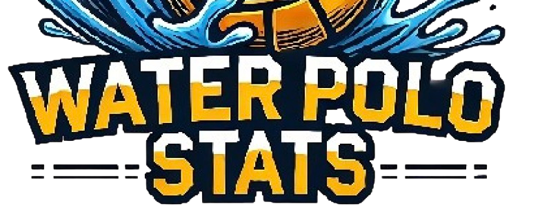

Latest Projects/Research

Water Polo Stats Application
Water Polo voice tracking statistics application using machine learning and GPT API. Includes schedules, rosters, and game logs (with timestamps). Framework is applicable to other sports.